Hold a key, or tap the mic.
A hotkey on desktop. A mic key on your phone.
⌥
speak, and it types
Free and open-source speech-to-text for your desktop and phone. On-device first.
Today
Move standup to ten and send the notes.
Animated illustration, not a screenshot.
how it works
A hotkey on desktop. A mic key on your phone.
The speech-to-text model listens, on your device by default.
In the app you already use, where the platform allows.
privacy, shown
On this device. After the model download, audio and the speech-to-text model stay on the phone or computer. No gateway needed.
default · on-device after the model is present
Your VocaGateway, if you want one. Gateway mode is not on-device: audio leaves the client for the self-hosted machine you chose, and the transcript comes back. Use a trusted LAN, an encrypted private network, or HTTPS.
optional · your host · your boundary · Explore VocaGateway ↗
what we promise
the family
Voice typing for Linux desktops.
X11 + Wayland · AGPL-3.0
A menu bar app for Apple Silicon Macs.
macOS 14+ · Apple Silicon · Homebrew or DMG · AGPL-3.0
A private voice keyboard for iPhone and Android.
Android 13+ beta · iOS 17+ TestFlight (1,000 seats) or source build · AGPL-3.0
Unsigned Windows beta. SmartScreen will warn; try it and file issues.
latest tagged v0.1.1-beta · unsigned NSIS · not a signed shipping build · AGPL-3.0-or-later
Optional self-hosted compute for Voca clients. Pair with a QR code.
tagged try v0.1.0 · native macOS or Linux · Docker Compose on Linux amd64/arm64 · no packaged installer · AGPL-3.0
quick answers
In on-device mode, yes: after the model download, processing stays on the phone or computer. In gateway mode, audio goes to the VocaGateway you host.
No. The gateway is optional, for shared hardware or larger models.
VocaLinux on Linux, VocaMac on an Apple Silicon Mac, VocaPhone on Android or iPhone, and VocaWin if you want to try the unsigned Windows beta.
Most of them. Secure fields, permissions, and platform rules can block text insertion.
Yes. Every Voca project is free and open source, and each names its license.
come build the family
Read the source, open an issue, or send a pull request.

grants
 ElevenLabs Grants
ElevenLabs Grants